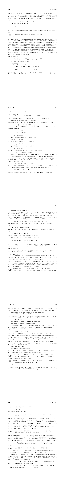
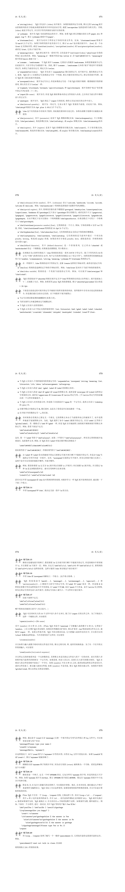
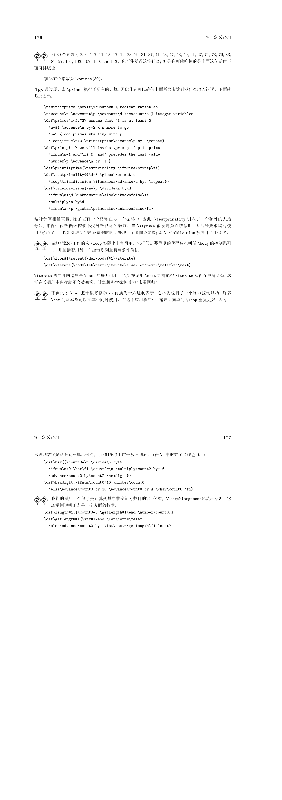

TEX命令行的使用
首先，第一步当然是打开TEX命令行，如果安装了TEX：
1 | $ tex |
然后会显示：
1 | This is TeX, Version 3.14159265 (TeX Live 2019/W32TeX) (preloaded format=tex) |
**表示这里要输入一个tex文件，如果在**后你键入的第一个字符不是反斜线，那么 TEX 将自动插入\input 你的输入读入tex文件（注意，不能加后缀名“.tex”，因为TEX要搜索tex文件的时候，会在输入的后面加“.tex”查找“[输入值].tex”文件）。
如果不想编译文件，那就输入\relex：
1 | This is TeX, Version 3.14159265 (TeX Live 2019/W32TeX) (preloaded format=tex) |
下面*就只剩一个了，这里就可以输入文本和各种控制词了。当检测到输入了\end时，tex程序会输出：
1 | [1] |
表示排好版的文件放到texput.dvi里面了，并退出了程序。
直接编译一个文件
如果要编译一个叫做“story.tex”的文件：
1 | $ tex story |
依然注意，不能加后缀名“.tex”。
TEX各种控制词
变量
1 | \font\cs=<external font name> %把 \cs 变成字体标识符 |
定义变量：
1 | \let\变量名=值 |
注意，TEX变量名不能有数字
显示变量：
1 | \show\变量名 |
例如：
1 | \let\countA=100 |
会输出：
1 | > \countB=the character 1. |
这表明\countB是一个字符；又例如：
1 | \let\countA=\it |
输出：
1 | > \countB=macro: |
表明\countB是个宏。
TEX宏
TEX的一些高级控制词和自定义控制词有时又被称作宏，其定义的一般形式为：
1 | \def<control sequence><parameter text>{replacement text} |
其中
<parameter text>不包含大括号, 并且在<replacement text>中所出现的{和}要正确嵌套。还有，符号#有特殊含义: 在<parameter text>中, 第一个出现的#后面必须跟1, 下一个要跟2，依此类推；只允许九个#。在<replacement text>中, 每个#后面必须跟一个<parameter text>中的#后面出现过的数字, 或者 一个#后面跟一个#。表示当宏展开时，后一种情况表示一个单个#；前一种情况表示插入相应的变量。TEX，包括Plain TEX中所有的宏（约900个）都是由TEX基本控制词（约300个）定义得到，而所有的基本控制词都能转化为屏幕上的输出。
——《The TeXBook》P.161
例如：
1 | \def\ib{\it\bf} |
调用时：
1 | \ib italicized text |
经过宏替换将变为：
1 | \it\bf italicized text |
或使用编组：
1 | \ib italicized text |
经过宏替换将变为：
1 | \it\bf italicized text |
另一种定义方法
TEX 还允许定义这样的宏, 其参数用相当普遍的方法来分界; 你不需要总是把变量封装在大括号 中。例如：
1 | \def\cs #1. #2\par{...} |
定义了一个控制系列
\cs, 它有两个参数, 并且这两个参数如下确定出:#1由\cs和下一个随后出现的“句点+空格”之间的所有内容组成;#2由这个“句点+空格”和其后出现的\par之间的所有内容组成。例如：
1 | \cs You owe \$5.00. Pay it.\par |
第一个变量是
You owe \$5.00, 而第二个是Pay it.。
——《The TeXBook》P.160
（合理联想：正则匹配取得参数）
编组
TEX的编组就是把多个文本编组为一个单一对象。例如：
1 | \canterline\TeX 123456 |
会以“TEX”为基准居中，而123456到了下一行。如果要让“TEX123456”整体居中，则需要让“TEX123456”编组成为一个单一对象：
1 | \canterline{\TeX 123456} |
此外，在编组中的\def也只会在当前编组中发挥作用。如果要让某个编组中的定义在全局发挥作用，则需要\global。例如一个在编组中的全局宏定义：
1 | {\global\def\ib{\it\bf}} |
LaTeX中的\begin{}和\end{}是怎么实现的？
关键在于《The TeXBook》习题5.6中讲的用基本控制词\begingroup和\endgroup定义组。答案在习题5.7：
1 | \def\begin#1{\begingroup\def\blockname{#1}} |
这里的\ifx、\else、\fi是什么？看下面👇
TeX选择结构
TeX选择结构


TeX循环结构
TeX循环结构

TEX支持的源代码字符
1 | ABCDEFGHIJKLMNOPQRSTUVWXYZ |
Plain TEX占用的特殊字符
1 | & |
Plain TEX保留的特殊字符
1 | \ |
你可以重新定义一个Plain TEX保留字符的定义，例如在CJK和CCT中就有一个对~符号的重新定义（这个符号在Plain TEX中表示“输出一个空格但不能在此断行”）：
1 | \global\def~{\hskip 0.25em plus 0.125em minus 0.08em \ignorespaces} |
控制词和空格
TEX把多个空格和单个换行看作单个空格。
控制词后的空格都会被忽略，因为每个控制词后都需要一个空格以与正文分开（或者一个反斜杠接上其他控制词）。
如果要在控制词后放入空格，就需要一个反斜杠加空格。例如：
1 | \TeX 123456 |
输出：TEX123456。如果要输出TEX 123456，则需要一个反斜杠加空格：
1 | \TeX\ 123456 |
但是这样如果空格后面是个符号又会出现其他问题，终极解决方案是编组再加空格：
1 | {\TeX} 123456 |
或者用空编组加空格：
1 | \TeX{} 123456 |
如果不希望一个换行变成空格，可以加入%，它使得输入文件的行有效地终止而不引入 换行时 TEX 通常要插入的空格。还有, TEX 将忽略掉 % 后的任何内容, 直到文件的那行的结尾, 这样就可以在文稿中加入注释, 这些注释只是为了阅读方便。
例如：
1 | 123 |
输出：123 456 789，而：
1 | 123% |
输出：123456789。
Plain TEX中改变部分字体：
1 | to be \bf bold \rm or to be ...... |
其中\bf表示加粗，\rm表示清除字体。同样的效果还可以用编组实现：
1 | to be {\bf bold} or to be ...... |
它们都会输出：
to be bold or to be …
类似\bf的控制词还有很多。
Plain TEX斜体校正/
\/加在斜体字符末尾一般字符开头处，会增大斜体字符和一般字符间的间距，弥补因斜体带来的字符间距缩减。
1 | to be {\it italicized\/} or to be ...... |
Plain TEX粗体校正/
加粗字符也会有字符间距缩减问题，解决办法同上。
1 | to be {\bf bold\/} or to be ...... |
自定义字体
\font\myfont=<字体名> at <大小>，例如10pt的CMR5字体
1 | \font\myfont=cmr5 at 10pt |
或者\font\myfont=<字体名> scaled <大小>，例如放大1.2倍的CMR5字体：
1 | \font\myfont=cmr5 scaled 1200 |
TEX的四种横线：
- 连字符-：
- - 短破折号—：
-- - 破折号——：
--- - 减号-：
$-$
TODO:TeX对齐/制表符&
《The TeXBook》22章